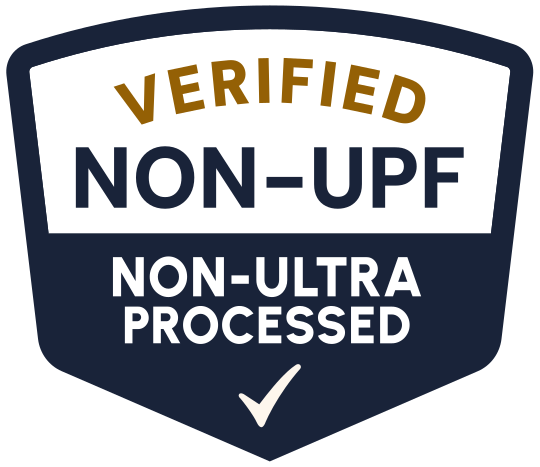
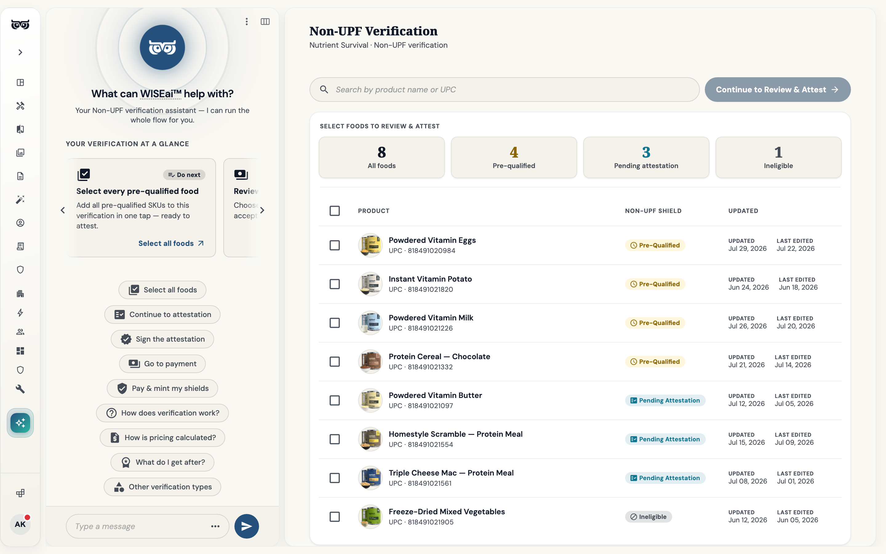
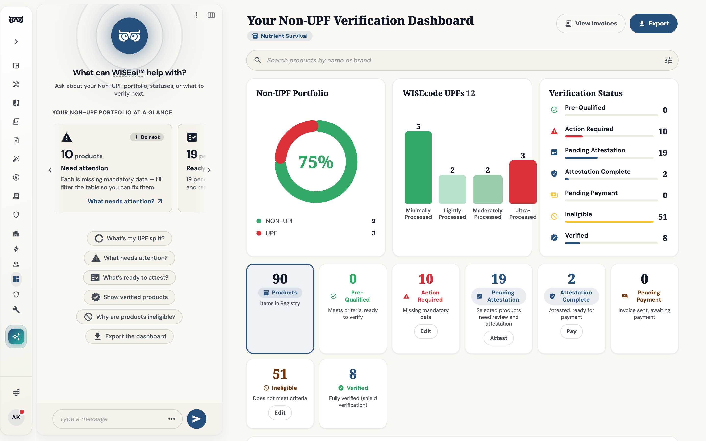

Independence
The verdict is ours, not the brand's. Verification is earned against a fixed standard — it can't be bought, negotiated or spun.

Non-UPF Verified™ is WISE's independent, science-backed certification. Every ingredient is evaluated against the NFP+™ standard and screened for safety — so the brands doing the work earn the Shield, and shoppers who want honest food can finally find them.
"Is this ultra-processed?" is the question shoppers can't answer from a label alone. Non-UPF Verified™ answers it for them — not with a marketing claim, but with an independent evaluation of what's in a product and how far it has been industrially transformed from whole food.

We picture a shelf where honest food is easy to find and impossible to fake — where the Shield means the same thing on every package, and the brands investing in real ingredients are the ones that get discovered. Non-UPF Verified™ exists to make food truth a standard the whole industry can build on, and every shopper can trust at a glance.
A certification is only as good as the principles that govern it. These are the commitments the Non-UPF Verified™ program is held to.
The verdict is ours, not the brand's. Verification is earned against a fixed standard — it can't be bought, negotiated or spun.
Every result is traceable to the ingredient and the evidence behind it. If a product passes — or doesn't — a brand can see exactly why.
The standard follows the science, not the trend. It's grounded in peer-reviewed research on ultra-processing and refined as the evidence evolves.
Food truth shouldn't require a chemistry degree. The Shield distills a complex evaluation into one signal anyone can trust in a second.
The same rules apply to a household name and a first-time founder. One standard, applied identically to every product, every time.
Verification is a starting line, not a gate. Brands that fall short get a clear path — and the tools — to reformulate and try again.
Every Non-UPF verdict rests on evidence, not opinion. Here's how we source, evaluate and keep the science current.
The definition of ultra-processing is grounded in published nutrition science — including the NOVA framework and the growing body of research linking ultra-processed food to health outcomes.
Ingredient identities and safety status are cross-checked against authoritative regulatory sources, including FDA GRAS records and additive databases.
Over a million analyzed products and 12,000+ attributes per food feed a living model of how ingredients are processed, combined and labeled across the market.
Nutrition scientists and food engineers set the thresholds, adjudicate edge cases and update the standard as new evidence emerges — so the model never runs unsupervised.
Verification isn't a single pass/fail switch — it's a set of measured signals across your whole portfolio. These are the metrics behind the Shield.

Run your portfolio through the Non-UPF Verified™ program and get discovered by shoppers and retailers actively searching for cleaner food.